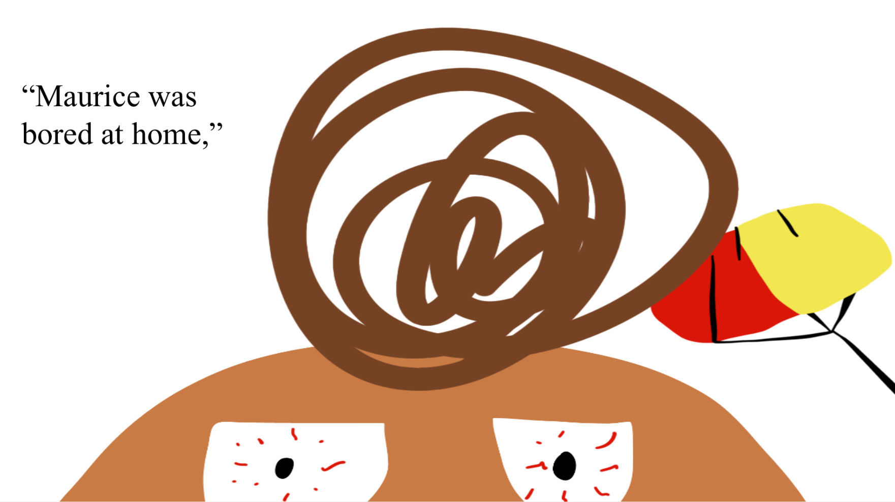
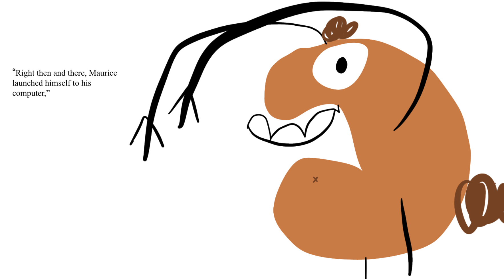
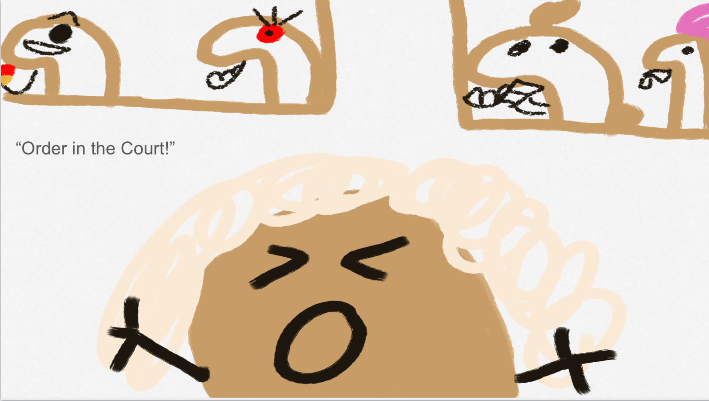
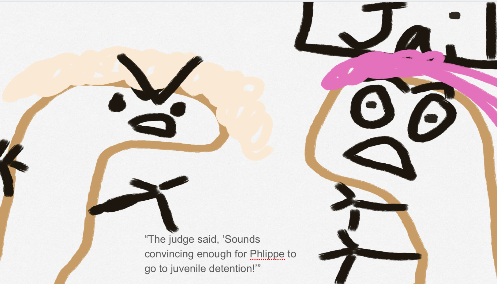
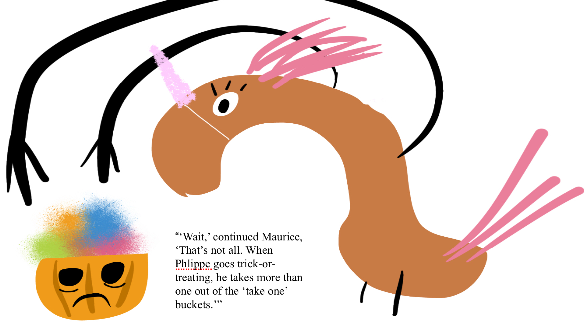
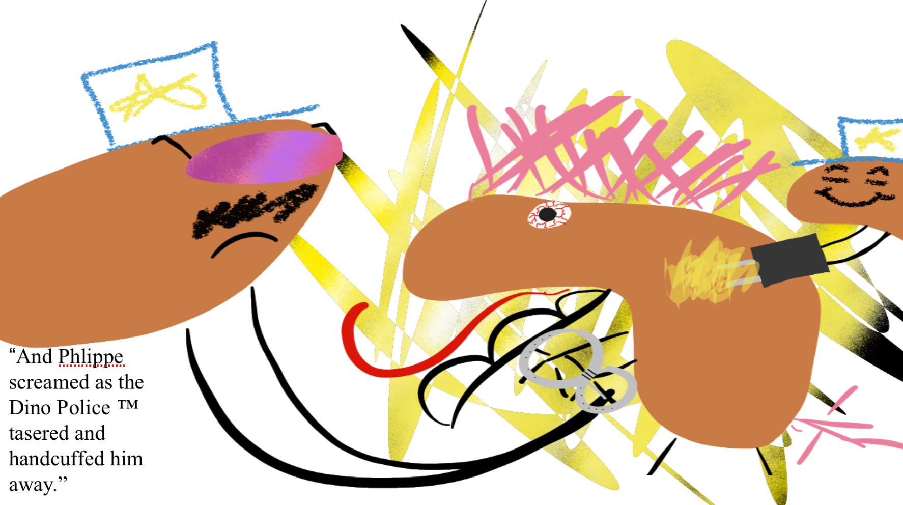
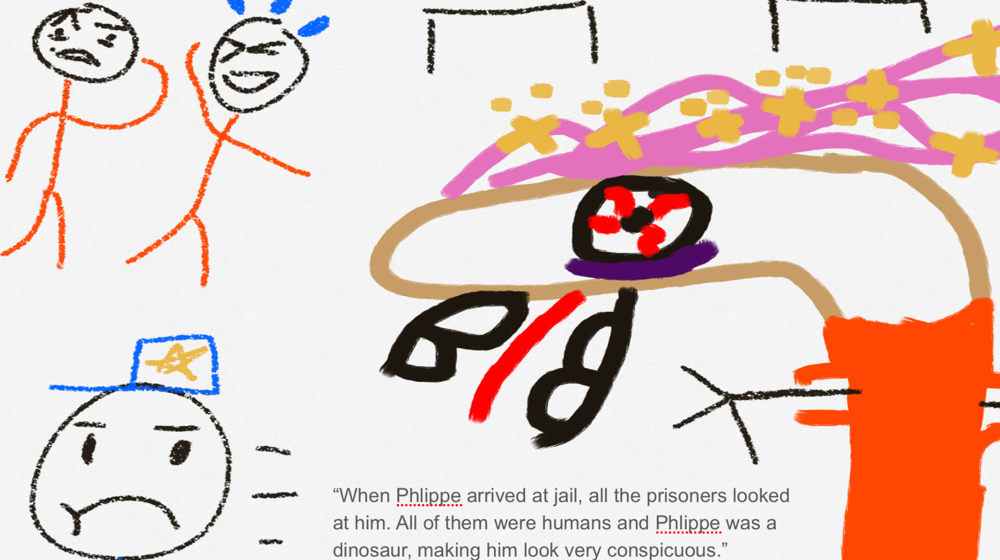
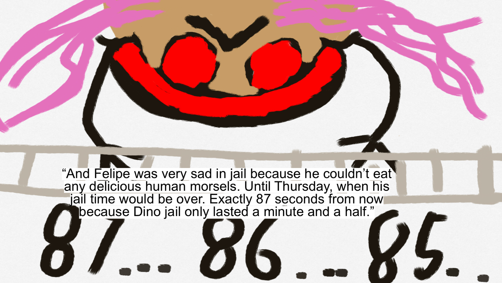

Phlippe isn't a cordial dinosaur. He is a cynic. He is also in jail. That is because he has an abusive uncle who blamed him for committing tax fraud. Gabe the Gambler and Fifi the Tax Fraud also blame Phlippe. Don't understand? Here's the full story…
Maurice was bored at home, so he decided to vilify Phlippe. The TV was on, and it was playing a news report about people who commit tax fraud going to jail.
Maurice exclaimed, “I'll frame Phlippe. Fifi won't be the only one who has committed tax fraud!”
Right then and there, Maurice launched himself to his computer, where he sent an email to the government about Phlippe's role in a recent tax fraud. He then started to play his favorite video game. And as his character decided to ascend up a ladder, he laughed. The day would be fun.
Phlippe, Maurice, Fifi, and Gabe were ready to start the court martial.
.jpg)
The judge entered and said, “ OrDeR In tHe CoUrT!!! We're here to send Phlippe to jail!”
“What happened?” Questioned the confused Phlippe.
“You committed tax fraud,” answered the judge.
“Fake news!!!!!” Shouted Phlippe.
“Here's my first piece of indispensable,” said Maurice, “Tax fraud has more letters than Phlippe! Therefore, he should go to jail for life!” Phlippe just looked at Maurice with a quizzical and blank expression.
The judge said, “ Sounds convincing enough for Phlippe to got to juvenile jail.”
“Wait,” continued Maurice,” That's not all. When Phlippe goes trick-or-treating, he takes more than one out of the 'take one' buckets.”
The judge proclaimed, “Let's take a vote. Should Phlippe go to jail? Is he guilty?” The vote was unanimous. Even Phlippe was starting to believe he committed the crime. All in all, the court meeting was very ephemeral. It took less than five minutes! And Phlippe screamed as the Dino Police ™ tasered and handcuffed him away.
When Phlippe got to jail, all the other prisoners looked at him. They were all humans. Phlippe was a Dino.That fact made him very conspicuous. Maurice and Fifi walked home with great elation. Maurice had a fun and entertaining day, and for once, it wasn't Fifi behind bars. The only one who was sad was Gabe because he had missed his daily gambling. And Phlippe was very sad in jail because he couldn't eat any delicious human morsels. Until Thursday, when his jail time would be over. Exactly 87 seconds from now, because Dino jail only lasted a minute and a half.
 The end.